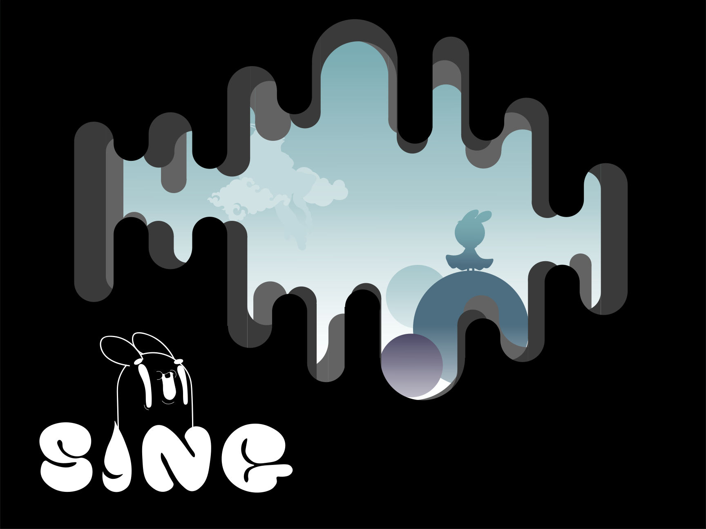

My Experience

SING
Project scratchตอนปี1เทอม1 ทำเกมขึ้นมาโดยใช้เสียงในการควบคุมตัวละครให้ลอยขึ้น-ลงเพื่อหลบสิ่งกีดขวางปลายทางของแต่ละแมพจะมีบอสของแต่ละแมพที่มีลักษณะการโจมตีที่แตกต่างกัน
Past Project
SING
: Project scratchตอนปี1เทอม1 ทำเกมขึ้นมาโดยใช้เสียงในการควบคุมตัวละครให้ลอยขึ้น-ลงเพื่อหลบสิ่งกีดขวางปลายทางของแต่ละแมพจะมีบอสของแต่ละแมพที่มีลักษณะการโจมตีที่แตกต่างกัน
I-am-STAY
: Projectตอนปี1เทอม2 เกี่ยวกับแอพจองโต๊ะสำหรับร้านอาหารหรือบาร์ต่างๆ
Hobby
: Listening to music,Gaming